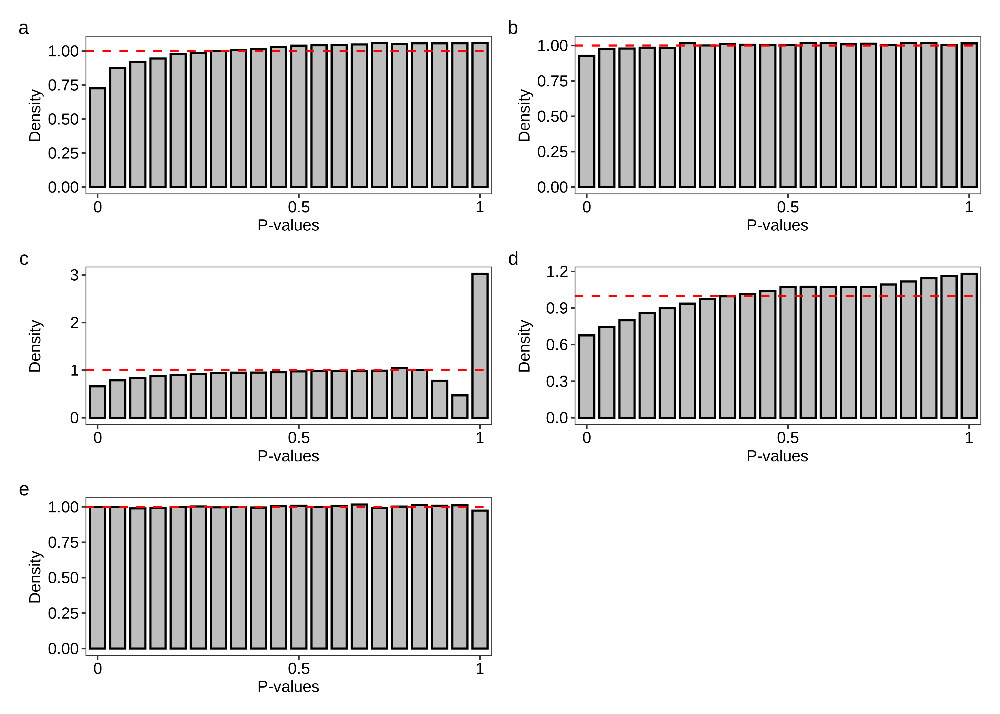

Last updated: 2023-08-01
Checks: 7 0
Knit directory:
TranscriptDE-code/analysis/
This reproducible R Markdown analysis was created with workflowr (version 1.7.0). The Checks tab describes the reproducibility checks that were applied when the results were created. The Past versions tab lists the development history.
Great! Since the R Markdown file has been committed to the Git repository, you know the exact version of the code that produced these results.
Great job! The global environment was empty. Objects defined in the global environment can affect the analysis in your R Markdown file in unknown ways. For reproduciblity it’s best to always run the code in an empty environment.
The command set.seed(20221115) was run prior to running
the code in the R Markdown file. Setting a seed ensures that any results
that rely on randomness, e.g. subsampling or permutations, are
reproducible.
Great job! Recording the operating system, R version, and package versions is critical for reproducibility.
Nice! There were no cached chunks for this analysis, so you can be confident that you successfully produced the results during this run.
Great job! Using relative paths to the files within your workflowr project makes it easier to run your code on other machines.
Great! You are using Git for version control. Tracking code development and connecting the code version to the results is critical for reproducibility.
The results in this page were generated with repository version 38d0392. See the Past versions tab to see a history of the changes made to the R Markdown and HTML files.
Note that you need to be careful to ensure that all relevant files for
the analysis have been committed to Git prior to generating the results
(you can use wflow_publish or
wflow_git_commit). workflowr only checks the R Markdown
file, but you know if there are other scripts or data files that it
depends on. Below is the status of the Git repository when the results
were generated:
Ignored files:
Ignored: .DS_Store
Ignored: .Rhistory
Ignored: .Rproj.user/
Ignored: ._.DS_Store
Ignored: .gitignore
Ignored: TranscriptDE-code.Rproj
Ignored: code/.DS_Store
Ignored: code/._.DS_Store
Ignored: code/lung-se/data/slurm-10685114.out
Ignored: code/lung-se/salmon/.RData
Ignored: code/lung-se/salmon/runWasabi.Rout
Ignored: code/lung-se/salmon/slurm-10685171.out
Ignored: code/lung-se/salmon/slurm-10694099.out
Ignored: code/lung/data/slurm-10678225.out
Ignored: code/lung/index/slurm-10679764.out
Ignored: code/lung/index/slurm-10679768.out
Ignored: code/lung/index/slurm-10684814.out
Ignored: code/lung/salmon/.RData
Ignored: code/lung/salmon/runWasabi.Rout
Ignored: code/lung/salmon/slurm-10681840.out
Ignored: code/lung/salmon/slurm-10681872.out
Ignored: code/lung/salmon/slurm-10684950.out
Ignored: code/lung/salmon/slurm-10694066.out
Ignored: code/pkg/.Rhistory
Ignored: code/pkg/.Rproj.user/
Ignored: code/pkg/pkg.Rproj
Ignored: code/pkg/src/RcppExports.o
Ignored: code/pkg/src/pkg.so
Ignored: code/pkg/src/rcpparma_hello_world.o
Ignored: data/annotation/hg38/
Ignored: data/annotation/mm39/
Ignored: data/annotation/sequins/._rnasequin_annotation_2.4.gtf
Ignored: data/annotation/sequins/._rnasequin_decoychr_2.4.fa
Ignored: data/annotation/sequins/._rnasequin_decoychr_2.4.fa.fai
Ignored: data/annotation/sequins/._rnasequin_genes_2.4.tsv
Ignored: data/annotation/sequins/._rnasequin_isoforms_2.4.tsv
Ignored: data/annotation/sequins/._rnasequin_sequences_2.4.fa
Ignored: data/lung-se/fastq/
Ignored: data/lung-se/misc/._filereport_read_run_PRJNA341465_tsv.txt
Ignored: data/lung/fastq/
Ignored: data/lung/index/
Ignored: data/lung/misc/._filereport_read_run_PRJNA723287_tsv.txt
Ignored: ignore/
Ignored: misc/.DS_Store
Ignored: misc/._.DS_Store
Ignored: misc/casestudy.Rmd/._figure6.png
Ignored: misc/casestudy.Rmd/._suppfigure_maplot.png
Ignored: misc/casestudy.Rmd/._suppfigure_overdispersion.png
Ignored: misc/casestudy.Rmd/._suppfigure_venn.png
Ignored: misc/casestudy.Rmd/._supptable_gene.tex
Ignored: misc/casestudy.Rmd/._supptable_overdispersion.tex
Ignored: misc/simulation-paper.Rmd/._figure2.png
Ignored: misc/simulation-paper.Rmd/._figure5.png
Ignored: output/.DS_Store
Ignored: output/._.DS_Store
Ignored: output/lung-se/
Ignored: output/lung/
Ignored: output/quasi_poisson/
Ignored: output/simulation/
Untracked files:
Untracked: misc/casestudy.Rmd/figure2.pdf
Untracked: misc/casestudy.Rmd/figure7.pdf
Untracked: misc/simulation-paper.Rmd/figure6.pdf
Unstaged changes:
Modified: misc/casestudy.Rmd/figure1.pdf
Deleted: misc/casestudy.Rmd/figure6.pdf
Deleted: misc/simulation-paper.Rmd/figure2.pdf
Modified: misc/simulation-paper.Rmd/figure3.pdf
Modified: misc/simulation-paper.Rmd/figure4.pdf
Modified: misc/simulation-paper.Rmd/figure5.pdf
Note that any generated files, e.g. HTML, png, CSS, etc., are not included in this status report because it is ok for generated content to have uncommitted changes.
These are the previous versions of the repository in which changes were
made to the R Markdown (analysis/simulation-paper.Rmd) and
HTML (docs/simulation-paper.html) files. If you’ve
configured a remote Git repository (see ?wflow_git_remote),
click on the hyperlinks in the table below to view the files as they
were in that past version.
| File | Version | Author | Date | Message |
|---|---|---|---|---|
| Rmd | 38d0392 | Pedro Baldoni | 2023-07-31 | Adding BCV plots |
| html | 3e11809 | Pedro Baldoni | 2023-06-05 | Build site. |
| Rmd | 6a74264 | Pedro Baldoni | 2023-06-05 | Producing figures in PDF format for the main paper |
| html | 6a74264 | Pedro Baldoni | 2023-06-05 | Producing figures in PDF format for the main paper |
| html | bfd4304 | Pedro Baldoni | 2023-05-21 | Build site. |
| Rmd | 1a75b18 | Pedro Baldoni | 2023-05-21 | updating results of single-end experiments |
| html | 5610c90 | Pedro Baldoni | 2023-02-24 | Build site. |
| html | f01c7b4 | Pedro Baldoni | 2023-02-23 | Build site. |
| Rmd | e2ef9d6 | Pedro Baldoni | 2023-02-23 | Removing cache |
| html | 24d66f4 | Pedro Baldoni | 2023-02-17 | Build site. |
| Rmd | 9b79374 | Pedro Baldoni | 2023-02-17 | Fix typo with sans family |
| html | 6a33f36 | Pedro Baldoni | 2023-02-17 | Build site. |
| Rmd | d42adad | Pedro Baldoni | 2023-02-17 | Presenting histograms |
| html | 38286e3 | Pedro Baldoni | 2023-02-17 | Build site. |
| html | b8e3979 | Pedro Baldoni | 2023-02-17 | Build site. |
| Rmd | 57b0d00 | Pedro Baldoni | 2023-02-17 | Renaming repo and organizing main page |
| html | 57b0d00 | Pedro Baldoni | 2023-02-17 | Renaming repo and organizing main page |
| Rmd | 623d429 | Pedro Baldoni | 2023-01-23 | Splitting figures |
| html | 623d429 | Pedro Baldoni | 2023-01-23 | Splitting figures |
| Rmd | 49c9a94 | Pedro Baldoni | 2023-01-19 | Expanding panels to multiple figures |
| html | 49c9a94 | Pedro Baldoni | 2023-01-19 | Expanding panels to multiple figures |
| Rmd | 4276bfc | Pedro Baldoni | 2023-01-06 | Organizing output of latex table |
| html | 4276bfc | Pedro Baldoni | 2023-01-06 | Organizing output of latex table |
| Rmd | a8c51af | Pedro Baldoni | 2023-01-05 | Updating simulation-paper report |
| html | a8c51af | Pedro Baldoni | 2023-01-05 | Updating simulation-paper report |
| Rmd | d34d4e6 | Pedro Baldoni | 2022-11-24 | Adding simulation-paper-report |
| html | d34d4e6 | Pedro Baldoni | 2022-11-24 | Adding simulation-paper-report |
In this report, we present the analysis of the simulations for the
catchSalmon/catchKallisto manuscript. These
simulations aim to generate typical RNA-seq data from mouse experiments.
This report focuses on the results presented in the main paper only. For
a comprehensive report of the results, please refer to the complete report.
We load necessary libraries and set up the rendering options below.
knitr::opts_chunk$set(dev = "png",
dpi = 300,
dev.args = list(type = "cairo-png"),
root.dir = '.',
autodep = TRUE)
options(knitr.kable.NA = "-")library(data.table)
library(ggplot2)
library(thematic)
library(plyr)
library(magrittr)
library(limma)
library(edgeR)
library(BiocParallel)
library(devtools)
library(purrr)
library(readr)
library(ggpubr)
library(kableExtra)
library(patchwork)
library(ragg)
load_all('../code/pkg/')I use the functions below to produce the histogram plot shown in this report and to quickly subset data tables for specific scenarios.
cleanPlot <- function(x,fig){
if (x == max(seq_along(fig))) {
y <- fig[[x]]
} else{
y <- fig[[x]] + theme(axis.title.x = element_blank(),
axis.text.x = element_blank(),
axis.ticks.x = element_blank())
}
if (x > 1) {
y <- y + theme(strip.background.x = element_blank(),
strip.text.x = element_blank())
}
return(y)
}
subsetDT <- function(x,scenario,panel = NULL,tx.per.gene = NULL, plot = TRUE){
if(isTRUE(plot)){
if(panel %in% c('A','B')){
out <- x[Genome == scenario['genome'] &
FC == ifelse(panel == 'A','fc2','fc1') &
Length == scenario['length'] &
Reads == scenario['read'] &
Quantifier == scenario['quantifier'] &
Scenario == scenario['scenario'],]
} else{
out <- x[Genome == scenario['genome'] &
FC == 'fc1' &
Length == scenario['length'] &
Reads == scenario['read'] &
Quantifier == scenario['quantifier'] &
Scenario == scenario['scenario'] &
TxPerGene == tx.per.gene ,]
}
} else{
out <- x[Genome == scenario['genome'] &
FC == 'fc2' &
Quantifier == scenario['quantifier'] &
TxPerGene == scenario['txpergene'],]
}
return(out)
}Here we begin summarizing the results to generate the figures presented in the main paper.
Below I set up the file paths.
path.misc <- file.path('../misc',knitr::current_input())
dir.create(path.misc,recursive = TRUE,showWarnings = FALSE)
path.fdr <-
list.files('../output/simulation/summary','fdr.tsv.gz',recursive = TRUE,full.names = TRUE)
path.metrics <-
list.files('../output/simulation/summary','metrics.tsv.gz',recursive = TRUE,full.names = TRUE)
path.time <-
list.files('../output/simulation/summary','time.tsv.gz',recursive = TRUE,full.names = TRUE)
path.quantile <-
list.files('../output/simulation/summary','quantile.tsv.gz',recursive = TRUE,full.names = TRUE)
path.pvalue <-
list.files('../output/simulation/summary','pvalue.tsv.gz',recursive = TRUE,full.names = TRUE)
path.overdispersion <-
list.files('../output/simulation/summary','overdispersion.tsv.gz',recursive = TRUE,full.names = TRUE)Loading all summarized results below.
# Loading datasets
dt.fdr <- do.call(rbind,lapply(path.fdr,fread))
dt.metrics <- do.call(rbind,lapply(path.metrics,fread))
dt.time <- do.call(rbind,lapply(path.time,fread))
dt.quantile <- do.call(rbind,lapply(path.quantile,fread))
dt.pvalue <- do.call(rbind,lapply(path.pvalue,fread))
dt.overdispersion <- do.call(rbind,lapply(path.overdispersion,fread))Some data wrangling below.
# Changing labels
dt.fdr$TxPerGene %<>%
mapvalues(from = paste0(c(2, 3, 4, 5, 9999), 'TxPerGene'),
to = c(paste0("#Tx/Gene = ", c(2, 3, 4, 5)), 'All Transcripts'))
dt.fdr$LibsPerGroup %<>%
mapvalues(from = paste0(c(3, 5, 10), 'libsPerGroup'),
to = paste0('#Lib/Group = ', c(3, 5, 10))) %>%
factor(levels = paste0('#Lib/Group = ', c(3, 5, 10)))
dt.fdr$Quantifier %<>% mapvalues(from = 'salmon', to = 'Salmon')
dt.fdr$Length %<>% mapvalues(from = paste0('readlen-', seq(50, 150, 25)),
to = paste0(seq(50, 150, 25), 'bp'))
dt.metrics$TxPerGene %<>%
mapvalues(from = paste0(c(2, 3, 4, 5, 9999), 'TxPerGene'),
to = c(paste0("#Tx/Gene = ", c(2, 3, 4, 5)), 'All Transcripts'))
dt.metrics$LibsPerGroup %<>%
mapvalues(from = paste0(c(3, 5, 10), 'libsPerGroup'),
to = paste0('#Lib/Group = ', c(3, 5, 10))) %>%
factor(levels = paste0('#Lib/Group = ', c(3, 5, 10)))
dt.metrics$Quantifier %<>% mapvalues(from = 'salmon', to = 'Salmon')
dt.metrics$Length %<>% mapvalues(from = paste0('readlen-', seq(50, 150, 25)),
to = paste0(seq(50, 150, 25), 'bp'))
dt.time$TxPerGene %<>%
mapvalues(from = paste0(c(2, 3, 4, 5, 9999), 'TxPerGene'),
to = c(paste0("#Tx/Gene = ", c(2, 3, 4, 5)), 'All Transcripts'))
dt.time$LibsPerGroup %<>%
mapvalues(from = paste0(c(3, 5, 10), 'libsPerGroup'),
to = paste0('#Lib/Group = ', c(3, 5, 10))) %>%
factor(levels = paste0('#Lib/Group = ', c(3, 5, 10)))
dt.time$Quantifier %<>% mapvalues(from = 'salmon', to = 'Salmon')
dt.time$Length %<>% mapvalues(from = paste0('readlen-', seq(50, 150, 25)),
to = paste0(seq(50, 150, 25), 'bp'))
dt.quantile$TxPerGene %<>%
mapvalues(from = paste0(c(2, 3, 4, 5, 9999), 'TxPerGene'),
to = c(paste0("#Tx/Gene = ", c(2, 3, 4, 5)), 'All Transcripts'))
dt.quantile$LibsPerGroup %<>%
mapvalues(from = paste0(c(3, 5, 10), 'libsPerGroup'),
to = paste0('#Lib/Group = ', c(3, 5, 10))) %>%
factor(levels = paste0('#Lib/Group = ', c(3, 5, 10)))
dt.quantile$Quantifier %<>% mapvalues(from = 'salmon', to = 'Salmon')
dt.quantile$Length %<>% mapvalues(from = paste0('readlen-', seq(50, 150, 25)),
to = paste0(seq(50, 150, 25), 'bp'))
dt.pvalue$TxPerGene %<>%
mapvalues(from = paste0(c(2, 3, 4, 5, 9999), 'TxPerGene'),
to = c(paste0("#Tx/Gene = ", c(2, 3, 4, 5)), 'All Transcripts'))
dt.pvalue$LibsPerGroup %<>%
mapvalues(from = paste0(c(3, 5, 10), 'libsPerGroup'),
to = paste0('#Lib/Group = ', c(3, 5, 10))) %>%
factor(levels = paste0('#Lib/Group = ', c(3, 5, 10)))
dt.pvalue$Quantifier %<>% mapvalues(from = 'salmon', to = 'Salmon')
dt.pvalue$Length %<>% mapvalues(from = paste0('readlen-', seq(50, 150, 25)),
to = paste0(seq(50, 150, 25), 'bp'))
dt.overdispersion$TxPerGene %<>%
mapvalues(from = paste0(c(2, 3, 4, 5, 9999), 'TxPerGene'),
to = c(paste0("#Tx/Gene = ", c(2, 3, 4, 5)), 'All Transcripts'))
dt.overdispersion$LibsPerGroup %<>%
mapvalues(from = paste0(c(3, 5, 10), 'libsPerGroup'),
to = paste0('#Lib/Group = ', c(3, 5, 10))) %>%
factor(levels = paste0('#Lib/Group = ', c(3, 5, 10)))
dt.overdispersion$Quantifier %<>% mapvalues(from = 'salmon', to = 'Salmon')
dt.overdispersion$Length %<>% mapvalues(from = paste0('readlen-', seq(50, 150, 25)),
to = paste0(seq(50, 150, 25), 'bp'))All the simulated scenarios are generated below.
dt.scenario <- expand.grid('genome' = 'mm39',
'length' = c('50bp','75bp','100bp','125bp','150bp'),
'read' = c('single-end','paired-end'),
'quantifier' = c('Salmon','kallisto'),
'scenario' = c('balanced','unbalanced'),
stringsAsFactors = FALSE)
dt.scenario <- as.data.table(dt.scenario)Below we generate Figure 3 of the main paper.
scenario.balanced <- as.character(dt.scenario[length == '100bp' &
read == 'paired-end' &
quantifier == 'Salmon' &
scenario == 'balanced',])
scenario.unbalanced <- as.character(dt.scenario[length == '100bp' &
read == 'paired-end' &
quantifier == 'Salmon' &
scenario == 'unbalanced',])
names(scenario.balanced) <- colnames(dt.scenario)
names(scenario.unbalanced) <- colnames(dt.scenario)
dt.power <- rbind(subsetDT(dt.metrics,scenario.balanced,'A'),
subsetDT(dt.metrics,scenario.unbalanced,'A'))
dt.power <- dt.power[LibsPerGroup != '#Lib/Group = 10',]
dt.power$LibsPerGroup %<>% mapvalues(from = paste0('#Lib/Group = ', c(3, 5)),
to = paste0(c(3,5),' samples per group'))
dt.power$Scenario %<>%
mapvalues(from = c('balanced','unbalanced'),
to = c('Equal library sizes','Unequal library sizes'))
dt.power[, FDR := roundPretty(ifelse((FP+TP) == 0,NA,100*FP/(FP+TP)),1)]
dt.power <- dt.power[TxPerGene == 'All Transcripts',]
sub.byvar <-
colnames(dt.power)[-which(colnames(dt.power) %in% c('P.SIG','TP','FP'))]
gap <- 0.05*max(dt.power$TP + dt.power$FP)
x.melt <- melt(dt.power,id.vars = sub.byvar,
measure.vars = c('TP','FP'),
variable.name = 'Type',
value.name = 'Value')
x.melt$Type <-
factor(x.melt$Type,
levels = c('FP','TP'),
labels = c('False','True'))
plot.power <- function(df.bar,df.txt,scenario,library,legend = FALSE, base_size = 8){
tb.bar <- df.bar[Scenario == scenario & LibsPerGroup == library,]
tb.txt <- df.txt[Scenario == scenario & LibsPerGroup == library,][FDR != 'NA',]
ggplot(tb.bar,aes(x = Method,y = Value,fill = Type)) +
geom_col(colour = 'black') +
geom_text(aes(x = Method,y = (TP + FP) + gap,label = FDR),
vjust = 0,data = tb.txt,size = base_size/.pt,inherit.aes = FALSE) +
scale_fill_manual(values = c('#ff0000','#bebebe')) +
labs(x = NULL,y = paste('DE Transcripts')) +
scale_y_continuous(limits = c(0,3000)) +
theme_bw(base_size = base_size,base_family = 'sans') +
theme(panel.grid = element_blank(),
axis.text.x = element_text(angle = 90),
axis.text = element_text(colour = 'black',size = base_size)) +
if (legend == TRUE) theme(legend.background = element_rect(fill = alpha('white', 0)),
legend.text = element_text(size = base_size),
legend.position = c(0.80,0.90),legend.title = element_blank(),
legend.key.size = unit(0.75,"line")) else theme(legend.position = 'none')
}
fig.power.a <- plot.power(df.bar = x.melt,df.txt = dt.power,scenario = 'Equal library sizes',library = '3 samples per group')
fig.power.b <- plot.power(df.bar = x.melt,df.txt = dt.power,scenario = 'Unequal library sizes',library = '3 samples per group',legend = TRUE)
fig.power.c <- plot.power(df.bar = x.melt,df.txt = dt.power,scenario = 'Equal library sizes',library = '5 samples per group')
fig.power.d <- plot.power(df.bar = x.melt,df.txt = dt.power,scenario = 'Unequal library sizes',library = '5 samples per group')
fig.power <- (fig.power.a + fig.power.b) / (fig.power.c + fig.power.d) +
plot_annotation(tag_levels = 'a') +
theme(plot.tag = element_text(size = 8))
ggsave(plot = fig.power,
filename = file.path(path.misc,"figure3.pdf"),
device = 'pdf',width = 5,height = 5,units = 'in',dpi = 300)
fig.power
Then, we generate Figure 4 below.
dt.fdr.plot <- rbind(subsetDT(dt.fdr,scenario.balanced,'A'),
subsetDT(dt.fdr,scenario.unbalanced,'A'))
dt.fdr.plot <- dt.fdr.plot[LibsPerGroup != "#Lib/Group = 10",]
dt.fdr.plot$LibsPerGroup %<>%
mapvalues(from = paste0('#Lib/Group = ', c(3, 5)),
to = paste0(c(3,5),' samples per group'))
dt.fdr.plot$Scenario %<>%
mapvalues(from = c('balanced','unbalanced'),
to = c('Equal library sizes','Unequal library sizes'))
dt.fdr.plot <- dt.fdr.plot[TxPerGene == 'All Transcripts',]
plot.fdr <- function(df.line,scenario,library,legend = FALSE,base_size = 8){
tb.bar <- df.line[Scenario == scenario & LibsPerGroup == library,]
ggplot(tb.bar,aes(x = N,y = FDR,color = Method,group = Method)) +
geom_line(linewidth = 0.5) +
scale_color_manual(values = methodsNames()$color) +
scale_y_continuous(limits = c(0,1250)) +
labs(y = 'False discoveries',x = 'Transcripts chosen') +
theme_bw(base_size = base_size,base_family = 'sans') +
theme(panel.grid = element_blank(),
axis.text = element_text(colour = 'black',size = base_size)) +
if (legend == TRUE) theme(legend.background = element_rect(fill = alpha('white', 0)),
legend.direction = 'vertical',
legend.position = c(0.3,0.8),
legend.text = element_text(size = base_size),
legend.title = element_blank(),
legend.key.size = unit(0.75,"line")) else theme(legend.position = 'none')
}
fig.fdr.a <- plot.fdr(df.line = dt.fdr.plot,scenario = 'Equal library sizes',library = '3 samples per group')
fig.fdr.b <- plot.fdr(df.line = dt.fdr.plot,scenario = 'Unequal library sizes',library = '3 samples per group',legend = TRUE)
fig.fdr.c <- plot.fdr(df.line = dt.fdr.plot,scenario = 'Equal library sizes',library = '5 samples per group')
fig.fdr.d <- plot.fdr(df.line = dt.fdr.plot,scenario = 'Unequal library sizes',library = '5 samples per group')
fig.fdr <- (fig.fdr.a + fig.fdr.b) / (fig.fdr.c + fig.fdr.d) +
plot_annotation(tag_levels = 'a')
ggsave(plot = fig.fdr,
filename = file.path(path.misc,"figure4.pdf"),
device = 'pdf',width = 5,height = 5,units = 'in',dpi = 300)
fig.fdr
Figure 5 is created below.
dt.type1error <- rbind(subsetDT(dt.metrics,scenario.balanced,'B'),
subsetDT(dt.metrics,scenario.unbalanced,'B'))
dt.type1error <- dt.type1error[LibsPerGroup != "#Lib/Group = 10",]
dt.type1error$LibsPerGroup %<>%
mapvalues(from = paste0('#Lib/Group = ', c(3, 5)),
to = paste0(c(3,5),' samples per group'))
dt.type1error$Scenario %<>%
mapvalues(from = c('balanced','unbalanced'),
to = c('Equal library sizes','Unequal library sizes'))
dt.type1error[, FDR := roundPretty(ifelse((FP+TP) == 0,NA,100*FP/(FP+TP)),1)]
dt.type1error <- dt.type1error[TxPerGene == 'All Transcripts',]
sub.byvar <-
colnames(dt.type1error)[-which(colnames(dt.type1error) %in% c('P.SIG','TP','FP'))]
x.melt <-
melt(dt.type1error,id.vars = sub.byvar,
measure.vars = c('P.SIG'),variable.name = 'Type',value.name = 'Value')
plot.type1error <- function(df.bar,scenario,library,legend = FALSE,base_size = 8){
tb.bar <- df.bar[Scenario == scenario & LibsPerGroup == library,]
ggplot(tb.bar,aes(x = Method,y = Value)) +
geom_col(fill = "#bebebe",col = 'black') +
geom_hline(yintercept = 0.05,color = '#ff0000',linetype = 'dashed',linewidth = 0.5) +
labs(x = NULL,y = paste('Type 1 error rate')) +
scale_y_continuous(limits = c(0,0.06),breaks = c(0,0.02,0.04,0.06)) +
theme_bw(base_size = base_size,base_family = 'sans') +
theme(panel.grid = element_blank(),
axis.text.x = element_text(angle = 90),
axis.text = element_text(colour = 'black',size = base_size))
}
fig.type1error.a <- plot.type1error(df.bar = x.melt,scenario = 'Equal library sizes',library = '3 samples per group')
fig.type1error.b <- plot.type1error(df.bar = x.melt,scenario = 'Unequal library sizes',library = '3 samples per group')
fig.type1error.c <- plot.type1error(df.bar = x.melt,scenario = 'Equal library sizes',library = '5 samples per group')
fig.type1error.d <- plot.type1error(df.bar = x.melt,scenario = 'Unequal library sizes',library = '5 samples per group')
fig.type1error <- (fig.type1error.a + fig.type1error.b) / (fig.type1error.c + fig.type1error.d) +
plot_annotation(tag_levels = 'a')
ggsave(plot = fig.type1error,
filename = file.path(path.misc,"figure5.pdf"),
device = 'pdf',width = 5,height = 5,units = 'in',dpi = 300)
fig.type1error
Finally, we generate Figure 6.
dt.pvalue.plot <- subsetDT(dt.pvalue,scenario.unbalanced,'C','All Transcripts')
dt.pvalue.plot <- dt.pvalue.plot[LibsPerGroup == '#Lib/Group = 5',]
plot.hist <- function(df.hist,method,legend = FALSE,base_size = 8){
tb.bar <- df.hist[Method == method,]
ggplot(data = tb.bar,aes(x = PValue,y = Density.Avg)) +
geom_col(fill = "#bebebe",col = 'black',position = position_dodge(),width = 0.75) +
geom_hline(yintercept = 1,col = '#ff0000',linetype = 'dashed',linewidth = 0.5) +
scale_x_discrete(breaks = c("(0.00-0.05]","(0.50-0.55]","(0.95-1.00]"),
labels = c(0.00,0.50,1.00)) +
labs(x = 'P-values',y = 'Density') +
theme_bw(base_size = base_size,base_family = 'sans') +
theme(panel.grid = element_blank(),
axis.text = element_text(colour = 'black',size = base_size))
}
fig.hist.a <- plot.hist(df.hist = dt.pvalue.plot,method = 'edgeR-raw')
fig.hist.b <- plot.hist(df.hist = dt.pvalue.plot,method = 'edgeR-scaled')
fig.hist.c <- plot.hist(df.hist = dt.pvalue.plot,method = 'sleuth-LRT')
fig.hist.d <- plot.hist(df.hist = dt.pvalue.plot,method = 'sleuth-Wald')
fig.hist.e <- plot.hist(df.hist = dt.pvalue.plot,method = 'Swish')
design <- c(
area(1,1),area(1,2),
area(2,1),area(2,2),
area(3,1)
)
fig.hist <- fig.hist.a + fig.hist.b + fig.hist.c + fig.hist.d + fig.hist.e +
plot_layout(design = design) +
plot_annotation(tag_levels = 'a')
ggsave(plot = fig.hist,
filename = file.path(path.misc,"figure6.pdf"),
device = 'pdf',width = 5,height = 7.5,units = 'in',dpi = 300)
fig.hist
Below we generate Table 1 of the main paper.
# Overdispersion fold-change
dt.sigma2 <- dt.overdispersion[TxPerGene == 'All Transcripts' &
Quantifier == 'Salmon' &
Scenario == 'unbalanced' &
FC == 'fc2' &
LibsPerGroup != '#Lib/Group = 10',]
dt.sigma2 <- dt.sigma2[,-c(1,3,5,6,8,10:15)]
dt.sigma2.150.PE <- dt.sigma2[Length == '150bp' & Reads == 'paired-end',][,-c(1,2)]
setnames(dt.sigma2.150.PE,old = 'Mean',new = 'Mean.150.PE')
dt.sigma2 <- merge(dt.sigma2,dt.sigma2.150.PE,by = c('LibsPerGroup'),
all.x=TRUE,sort = FALSE)
dt.sigma2[,FC := Mean - Mean.150.PE]
dt.sigma2.3 <- dt.sigma2[LibsPerGroup == '#Lib/Group = 3',]
dt.sigma2.5 <- dt.sigma2[LibsPerGroup == '#Lib/Group = 5',]
dt.sigma2.3 <- dcast(dt.sigma2.3,LibsPerGroup + Length ~ Reads,value.var = 'FC')
dt.sigma2.5 <- dcast(dt.sigma2.5,LibsPerGroup + Length ~ Reads,value.var = 'FC')
setnames(dt.sigma2.3,
old = c('paired-end','single-end'),
new = c('FC.PE','FC.SE'))
setnames(dt.sigma2.5,
old = c('paired-end','single-end'),
new = c('FC.PE','FC.SE'))
setcolorder(dt.sigma2.3,neworder = c('LibsPerGroup','Length','FC.PE','FC.SE'))
setcolorder(dt.sigma2.5,neworder = c('LibsPerGroup','Length','FC.PE','FC.SE'))
dt.sigma2.long <- rbind(dt.sigma2.3,dt.sigma2.5)
dt.sigma2.long$LibsPerGroup %<>%
mapvalues(from = c('#Lib/Group = 3','#Lib/Group = 5'),to = c(3,5))
dt.sigma2.long$Length %<>% factor(levels = paste0(seq(50,150,25),'bp'))
dt.sigma2.long <- dt.sigma2.long[order(LibsPerGroup,Length),]
# Power and FDR
dt.scenario.table <-
expand.grid('genome' = 'mm39',
'quantifier' = c('Salmon','kallisto'),
'txpergene' = c(paste0('#Tx/Gene = ',2:5),'All Transcripts'),
stringsAsFactors = FALSE)
dt.scenario.table <- as.data.table(dt.scenario.table)
scenario.table <-
dt.scenario.table[quantifier == 'Salmon' & txpergene == 'All Transcripts',]
scenario.table <- as.character(scenario.table)
names(scenario.table) <- colnames(dt.scenario.table)
dt.table <- subsetDT(dt.metrics,scenario = scenario.table,plot = FALSE)
dt.table <- dt.table[Method == 'edgeR-scaled' &
Scenario == 'unbalanced' &
LibsPerGroup != '#Lib/Group = 10',]
dt.table[,Power := TP/3000]
dt.table[,FDR := ifelse((FP+TP) == 0,NA,FP/(FP+TP))]
dt.table.3 <- dt.table[LibsPerGroup == '#Lib/Group = 3',][,-c(1,3,5,6,8:12)]
dt.table.5 <- dt.table[LibsPerGroup == '#Lib/Group = 5',][,-c(1,3,5,6,8:12)]
dt.table.3 <- dcast(dt.table.3,LibsPerGroup + Length ~ Reads,value.var = c('Power','FDR'))
dt.table.5 <- dcast(dt.table.5,LibsPerGroup + Length ~ Reads,value.var = c('Power','FDR'))
setnames(dt.table.3,
old = c('Power_paired-end','Power_single-end','FDR_paired-end','FDR_single-end'),
new = c('Power.PE','Power.SE','FDR.PE','FDR.SE'))
setnames(dt.table.5,
old = c('Power_paired-end','Power_single-end','FDR_paired-end','FDR_single-end'),
new = c('Power.PE','Power.SE','FDR.PE','FDR.SE'))
setcolorder(dt.table.3,neworder = c('LibsPerGroup','Length','Power.SE','FDR.SE','Power.PE','FDR.PE'))
setcolorder(dt.table.5,neworder = c('LibsPerGroup','Length','Power.SE','FDR.SE','Power.PE','FDR.PE'))
dt.table.long <- rbind(dt.table.3,dt.table.5)
dt.table.long$LibsPerGroup %<>% mapvalues(from = c('#Lib/Group = 3','#Lib/Group = 5'),to = c(3,5))
dt.table.long$Length %<>% factor(levels = paste0(seq(50,150,25),'bp'))
dt.table.long <- dt.table.long[order(LibsPerGroup,Length),]
# Organizing tables
dt.table.sigma2 <-
merge(dt.table.long,dt.sigma2.long,
all.x = TRUE,by = c('LibsPerGroup','Length'),sort = FALSE)
setcolorder(dt.table.sigma2,
neworder = c('LibsPerGroup','Length',
'FC.SE','Power.SE','FDR.SE',
'FC.PE','Power.PE','FDR.PE'))
dt.table.sigma2[,Length := gsub('bp','',Length)]
dt.table.sigma2$LibsPerGroup %<>% mapvalues(from = c(3,5),to = c('Three','Five'))
tb <- kbl(dt.table.sigma2,digits = 3,format = 'latex',escape = FALSE,booktabs = TRUE,
align = c('c','r',rep('r',6)),
col.names = linebreak(c('Samples per\ngroup','Read Length\n(bp)',
'Mapping Ambiguity\nlog-FC','Power','FDR',
'Mapping Ambiguity\nlog-FC','Power','FDR'),align = "c")) %>%
add_header_above(c(" " = 2, "Single-end Read" = 3, "Paired-end Read" = 3)) %>%
collapse_rows(1, latex_hline = 'major')
save_kable(tb,file = file.path(path.misc,"table1.tex"))In the main paper we also comment on methods’ performance regarding computing time. The table below present such numbers.
dt.time[, .(min =60*min(Time),
mean = 60*mean(Time),
med = 60*median(Time),
max = 60*max(Time)),by = c('Quantifier','LibsPerGroup','Method')] Quantifier LibsPerGroup Method min mean med
1: kallisto #Lib/Group = 10 sleuth-LRT 82.17615 121.016101 120.034750
2: kallisto #Lib/Group = 10 sleuth-Wald 70.17770 94.505086 94.504450
3: kallisto #Lib/Group = 10 Swish 82.49180 107.369005 108.558900
4: kallisto #Lib/Group = 10 edgeR-scaled 18.42285 24.523588 24.777975
5: kallisto #Lib/Group = 10 edgeR-raw 18.74970 25.577671 25.852075
6: Salmon #Lib/Group = 10 sleuth-LRT 88.06350 129.512314 130.150425
7: Salmon #Lib/Group = 10 sleuth-Wald 74.41825 100.213976 100.572475
8: Salmon #Lib/Group = 10 Swish 74.73545 96.503472 97.155575
9: Salmon #Lib/Group = 10 edgeR-scaled 12.73215 16.662010 16.812175
10: Salmon #Lib/Group = 10 edgeR-raw 13.02015 17.524209 17.723825
11: kallisto #Lib/Group = 3 sleuth-LRT 48.90445 114.777883 117.900825
12: kallisto #Lib/Group = 3 sleuth-Wald 34.58840 85.275455 87.065625
13: kallisto #Lib/Group = 3 Swish 34.37065 45.465593 44.626050
14: kallisto #Lib/Group = 3 edgeR-scaled 7.03775 9.823749 9.811000
15: kallisto #Lib/Group = 3 edgeR-raw 7.41345 10.634582 10.534025
16: Salmon #Lib/Group = 3 sleuth-LRT 45.96170 112.039833 113.554825
17: Salmon #Lib/Group = 3 sleuth-Wald 31.45615 81.714932 83.387850
18: Salmon #Lib/Group = 3 Swish 31.83835 42.791656 42.444400
19: Salmon #Lib/Group = 3 edgeR-scaled 5.03500 6.981560 6.968950
20: Salmon #Lib/Group = 3 edgeR-raw 5.34300 7.697310 7.773125
21: kallisto #Lib/Group = 5 sleuth-LRT 61.24195 150.971167 155.360425
22: kallisto #Lib/Group = 5 sleuth-Wald 46.10565 121.186748 123.230125
23: kallisto #Lib/Group = 5 Swish 50.51140 64.607524 64.502500
24: kallisto #Lib/Group = 5 edgeR-scaled 10.49230 14.251279 14.349650
25: kallisto #Lib/Group = 5 edgeR-raw 10.87865 15.045484 15.178575
26: Salmon #Lib/Group = 5 sleuth-LRT 55.51295 149.997005 154.280775
27: Salmon #Lib/Group = 5 sleuth-Wald 41.56545 119.838872 120.990575
28: Salmon #Lib/Group = 5 Swish 46.06595 59.589219 59.646250
29: Salmon #Lib/Group = 5 edgeR-scaled 7.21000 9.741031 9.840850
30: Salmon #Lib/Group = 5 edgeR-raw 7.54285 10.564921 10.732775
Quantifier LibsPerGroup Method min mean med
max
1: 162.29385
2: 118.90330
3: 129.86270
4: 29.97945
5: 31.75405
6: 176.43940
7: 131.24655
8: 120.01060
9: 21.74150
10: 22.03945
11: 239.02190
12: 163.38015
13: 64.40590
14: 14.38945
15: 18.12705
16: 291.38200
17: 148.87335
18: 85.81485
19: 9.84275
20: 10.67450
21: 248.24995
22: 203.70500
23: 81.35545
24: 18.53090
25: 19.54600
26: 247.50205
27: 199.06345
28: 77.99000
29: 12.95745
30: 13.80970
max
sessionInfo()R version 4.3.0 (2023-04-21)
Platform: x86_64-pc-linux-gnu (64-bit)
Running under: CentOS Linux 7 (Core)
Matrix products: default
BLAS: /stornext/System/data/apps/R/R-4.3.0/lib64/R/lib/libRblas.so
LAPACK: /stornext/System/data/apps/R/R-4.3.0/lib64/R/lib/libRlapack.so; LAPACK version 3.11.0
locale:
[1] LC_CTYPE=en_US.UTF-8 LC_NUMERIC=C
[3] LC_TIME=en_US.UTF-8 LC_COLLATE=en_US.UTF-8
[5] LC_MONETARY=en_US.UTF-8 LC_MESSAGES=en_US.UTF-8
[7] LC_PAPER=en_US.UTF-8 LC_NAME=C
[9] LC_ADDRESS=C LC_TELEPHONE=C
[11] LC_MEASUREMENT=en_US.UTF-8 LC_IDENTIFICATION=C
time zone: UTC
tzcode source: system (glibc)
attached base packages:
[1] stats graphics grDevices utils datasets methods base
other attached packages:
[1] pkg_1.0 ragg_1.2.5 patchwork_1.1.2
[4] kableExtra_1.3.4 ggpubr_0.6.0 readr_2.1.4
[7] purrr_1.0.1 devtools_2.4.5 usethis_2.2.2
[10] BiocParallel_1.34.2 edgeR_3.42.4 limma_3.56.2
[13] magrittr_2.0.3 plyr_1.8.8 thematic_0.1.2.1
[16] ggplot2_3.4.2 data.table_1.14.8 workflowr_1.7.0
loaded via a namespace (and not attached):
[1] splines_4.3.0 later_1.3.1
[3] BiocIO_1.10.0 bitops_1.0-7
[5] filelock_1.0.2 R.oo_1.25.0
[7] tibble_3.2.1 XML_3.99-0.14
[9] lifecycle_1.0.3 rstatix_0.7.2
[11] rprojroot_2.0.3 ensembldb_2.24.0
[13] processx_3.8.2 lattice_0.21-8
[15] backports_1.4.1 sass_0.4.6
[17] rmarkdown_2.23 jquerylib_0.1.4
[19] yaml_2.3.7 remotes_2.4.2
[21] httpuv_1.6.11 sessioninfo_1.2.2
[23] pkgbuild_1.4.2 DBI_1.1.3
[25] abind_1.4-5 pkgload_1.3.2.1
[27] zlibbioc_1.46.0 rvest_1.0.3
[29] GenomicRanges_1.52.0 R.utils_2.12.2
[31] AnnotationFilter_1.24.0 BiocGenerics_0.46.0
[33] RCurl_1.98-1.12 rappdirs_0.3.3
[35] git2r_0.32.0 GenomeInfoDbData_1.2.10
[37] wasabi_1.0.1 IRanges_2.34.1
[39] S4Vectors_0.38.1 fishpond_2.6.2
[41] svglite_2.1.1 DelayedArray_0.26.6
[43] codetools_0.2-19 xml2_1.3.5
[45] tidyselect_1.2.0 farver_2.1.1
[47] matrixStats_1.0.0 stats4_4.3.0
[49] BiocFileCache_2.8.0 webshot_0.5.5
[51] showtext_0.9-6 GenomicAlignments_1.36.0
[53] jsonlite_1.8.7 ellipsis_0.3.2
[55] systemfonts_1.0.4 tools_4.3.0
[57] progress_1.2.2 Rcpp_1.0.11
[59] glue_1.6.2 svMisc_1.2.3
[61] xfun_0.39 MatrixGenerics_1.12.2
[63] GenomeInfoDb_1.36.1 dplyr_1.1.2
[65] withr_2.5.0 BiocManager_1.30.21
[67] fastmap_1.1.1 rhdf5filters_1.12.1
[69] fansi_1.0.4 callr_3.7.3
[71] digest_0.6.33 R6_2.5.1
[73] mime_0.12 textshaping_0.3.6
[75] colorspace_2.1-0 gtools_3.9.4
[77] biomaRt_2.56.1 RSQLite_2.3.1
[79] R.methodsS3_1.8.2 utf8_1.2.3
[81] tidyr_1.3.0 generics_0.1.3
[83] tximeta_1.18.0 rtracklayer_1.60.0
[85] S4Arrays_1.0.4 prettyunits_1.1.1
[87] httr_1.4.6 htmlwidgets_1.6.2
[89] whisker_0.4.1 pkgconfig_2.0.3
[91] gtable_0.3.3 blob_1.2.4
[93] SingleCellExperiment_1.22.0 XVector_0.40.0
[95] htmltools_0.5.5 carData_3.0-5
[97] sysfonts_0.8.8 profvis_0.3.8
[99] ProtGenerics_1.32.0 sleuth_0.30.0
[101] scales_1.2.1 Biobase_2.60.0
[103] Rsubread_2.14.2 png_0.1-8
[105] knitr_1.43 rstudioapi_0.15.0
[107] tzdb_0.4.0 rjson_0.2.21
[109] curl_5.0.1 showtextdb_3.0
[111] cachem_1.0.8 rhdf5_2.44.0
[113] stringr_1.5.0 BiocVersion_3.17.1
[115] parallel_4.3.0 miniUI_0.1.1.1
[117] AnnotationDbi_1.62.2 restfulr_0.0.15
[119] desc_1.4.2 pillar_1.9.0
[121] grid_4.3.0 vctrs_0.6.3
[123] urlchecker_1.0.1 promises_1.2.0.1
[125] car_3.1-2 dbplyr_2.3.3
[127] xtable_1.8-4 tximport_1.28.0
[129] evaluate_0.21 GenomicFeatures_1.52.1
[131] Rsamtools_2.16.0 cli_3.6.1
[133] locfit_1.5-9.8 compiler_4.3.0
[135] rlang_1.1.1 crayon_1.5.2
[137] ggsignif_0.6.4 labeling_0.4.2
[139] ps_1.7.5 getPass_0.2-2
[141] fs_1.6.2 stringi_1.7.12
[143] viridisLite_0.4.2 munsell_0.5.0
[145] Biostrings_2.68.1 lazyeval_0.2.2
[147] Matrix_1.6-0 hms_1.1.3
[149] bit64_4.0.5 Rhdf5lib_1.22.0
[151] KEGGREST_1.40.0 shiny_1.7.4.1
[153] highr_0.10 SummarizedExperiment_1.30.2
[155] interactiveDisplayBase_1.38.0 AnnotationHub_3.8.0
[157] broom_1.0.5 memoise_2.0.1
[159] bslib_0.5.0 bit_4.0.5